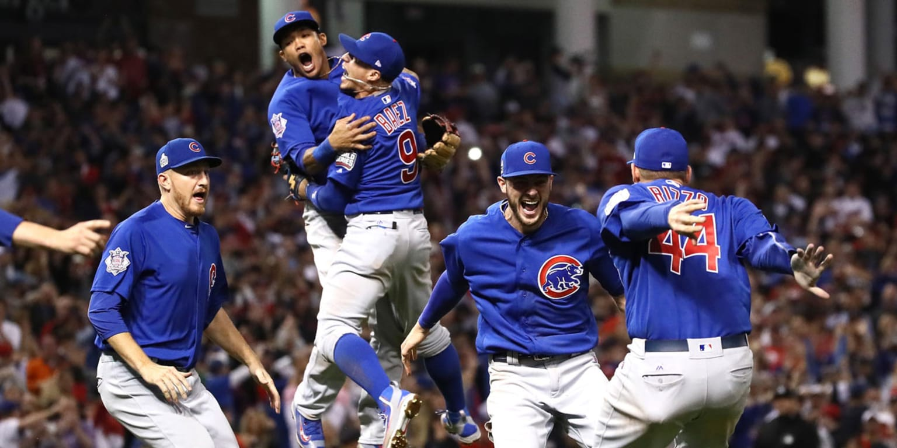

Why they are one of the greatest baseball teams of all time
The 2016 Chicago Cubs ended a 108-year World Series drought, overcoming history, pressure, and one of the most dramatic Game 7s ever played.
